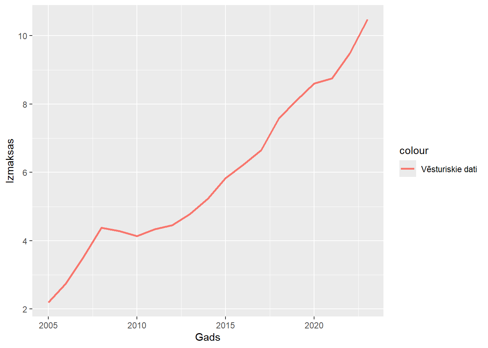

| Modelis | Formula | R² |
|---|---|---|
| Lineārais | y = -823.6 + 0.41*x | 0.96 |
| Logaritmiskais | y = -6303.54 + 829.33*log(x) | 0.96 |
| Eksponenciālais | y = exp(-147.28 + 0.07*x) | 0.95 |
| Pakāpes | y = exp(-1131.69 + 148.97*log(x)) | 0.95 |
Laika rindas klasisaās prognozēšanas metodes
Patstāvīgais darbs par laika rindu klasiskiem prognozēšanas modeļiem
Sākotnējie dati
Vienas stundas darbaspēka izmaksas pa darbības veidiem (eiro) 2005 - 2023
| Gads | Izmaksas |
|---|---|
| 2005 | 2.19 |
| 2006 | 2.75 |
| 2007 | 3.53 |
| 2008 | 4.38 |
| 2009 | 4.28 |
| 2010 | 4.14 |
| 2011 | 4.34 |
| 2012 | 4.45 |
| 2013 | 4.78 |
| 2014 | 5.23 |
| 2015 | 5.83 |
| 2016 | 6.23 |
| 2017 | 6.65 |
| 2018 | 7.58 |
| 2019 | 8.11 |
| 2020 | 8.60 |
| 2021 | 8.75 |
| 2022 | 9.48 |
| 2023 | 10.48 |

Trendu izpēte
Prognozes veidošana
| Gads | Izmaksas | Datu tips | Prognoze | LCL | UCL |
|---|---|---|---|---|---|
| 2005 | 2.19 | Vēsturiskie | NA | NA | NA |
| 2006 | 2.75 | Vēsturiskie | NA | NA | NA |
| 2007 | 3.53 | Vēsturiskie | NA | NA | NA |
| 2008 | 4.38 | Vēsturiskie | NA | NA | NA |
| 2009 | 4.28 | Vēsturiskie | NA | NA | NA |
| 2010 | 4.14 | Vēsturiskie | NA | NA | NA |
| 2011 | 4.34 | Vēsturiskie | NA | NA | NA |
| 2012 | 4.45 | Vēsturiskie | NA | NA | NA |
| 2013 | 4.78 | Vēsturiskie | NA | NA | NA |
| 2014 | 5.23 | Vēsturiskie | NA | NA | NA |
| 2015 | 5.83 | Vēsturiskie | NA | NA | NA |
| 2016 | 6.23 | Vēsturiskie | NA | NA | NA |
| 2017 | 6.65 | Vēsturiskie | NA | NA | NA |
| 2018 | 7.58 | Vēsturiskie | NA | NA | NA |
| 2019 | 8.11 | Vēsturiskie | NA | NA | NA |
| 2020 | 8.60 | Vēsturiskie | NA | NA | NA |
| 2021 | 8.75 | Vēsturiskie | NA | NA | NA |
| 2022 | 9.48 | Vēsturiskie | NA | NA | NA |
| 2023 | 10.48 | Vēsturiskie | NA | NA | NA |
| 2024 | NA | Prognoze | 10.00175 | 8.803 | 11.201 |
| 2025 | NA | Prognoze | 10.41361 | 9.197 | 11.630 |
| 2026 | NA | Prognoze | 10.82547 | 9.589 | 12.061 |
| 2027 | NA | Prognoze | 11.23733 | 9.981 | 12.494 |
| 2028 | NA | Prognoze | 11.64919 | 10.371 | 12.928 |
Prognozes vizualizēšana

Lineārā modeļa formula: y = -823.60 + 0.41 * xR-squared: 0.956